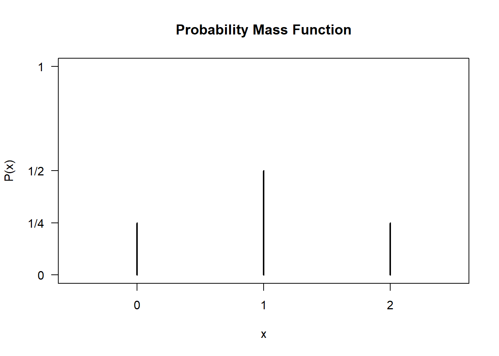
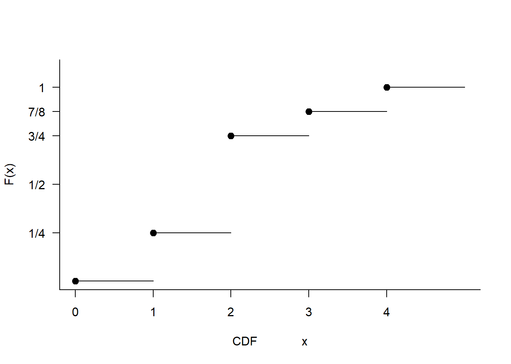

Probability Distributions
CLO
CLO 1: APPLY the concept of probability in relation to the concept of sampling error. (C3)
CLO 2: EXPLAIN the concept of point and confidence interval estimation for given parameters. (C2, A4)
CLO 3: DESIGN appropriate hypothesis testing based on given statistical problems. (C5, P7)
Objectives
Recall random variables
Discrete and continuous random variables
Expected valus, variance and standard deviation of random variables
Moments and Moment Generating Functions
Random Variables
Given a random experiment with an outcome space \(S\), a function \(X\) that assigns one and only one real number \(X(s) = x\) to each element \(s\) in \(S\) is called a random variable. The space of \(X\) is the set of real numbers \(\{x: X(s) = x, s \in S\}\).
A random variable, usually written X, is a variable whose possible values are numerical outcomes of a random phenomenon
Random Variables: Example
For a rat selected at random, the outcome space is \(S = \{F, M\}\). If \(X(F) = 0\) and \(X(M) = 1\), \(X\) is a random variable with the space \(\{0, 1\}\).
When tossing a die, the outcome space is \(S = \{1, 2, 3, 4, 5, 6\}\).
- The experiment is tossing a die. Then the outcome space associated with this experiment is S= {1, 2, 3, 4, 5, 6} with elements of S indicating the number of spots on the side facing up. For each s∈S, let X(s) = s. the space of the random variable X is then {1, 2, 3, 4, 5, 6}
Tossing 3 fair coins, let \(Y\) denote the number of heads. The probabilities are \(P(Y=0)=1/8\), \(P(Y=1)=3/8\), \(P(Y=2)=3/8\), and \(P(Y=3)=1/8\).
- Tossing 3 fair coins. Y denoted the number of head that appear. Then, Y is a RV taking on one of the values 0, 1, 2 and 3 with respective probabilities.
\[\begin{align} P(Y=0) &= P(TTT) = 1/8 \\ P(Y=1) &= P[(HTT,THT,TTH)] = 3/8 \\ P(Y=2) &= P[(HHT,HTH,THH)] = 3/8 \\ P(Y=3) &= P(HHH) = 1/8 \end{align}\]
Discrete vs. Continuous Random Variables
Discrete Random Variables
A discrete random variable takes on at most a countable number of possible values.
Its probability distribution, or probability mass function (p.m.f.), provides
The p.m.f can be represented by a formula, a table, or a graph
It assigns nonzero probabilities to only a countable number of distinct x values i.e. \[P(X=x) \ \text {exists for all} \ x\].
The p.m.f. \(f(x)\) satisfies:
\(f(x_i) \geq 0\) for \(x \in S\).
\(\sum_{x \in S} f(x_i) = 1\).
\(P(X \in A) = \sum_{x \in A} P(x)\) for \(A \subset S\) .
Discrete Random Variables: Example
We can plot the p.m.f in a graphical format.
| \(x\) | 0 | 1 | 2 |
|---|---|---|---|
| \(P(x)\) | \(\frac{1}{4}\) | $ | \(\frac{1}{4}\) |
Discrete Random Variables: Example
Let a chip be taken at random from a bowl that contains six white chips, three red chips, and one blue chip. Let the random variable \(X = 1\) if the outcome is a white chip, let \(X = 5\) if the outcome is a red chip, and let \(X = 10\) if the outcome is a blue chip.
Find the pmf of X.
Graph the pmf as a line graph.
| \(x\) | 1 | 5 | 10 |
|---|---|---|---|
| \(P(x)\) | \(\frac{3}{5}\) | $ | \(\frac{1}{10}\) |
Discrete Random Variables: Exercise
A tech company manufactures high-end smartphones. Before shipping, an automated inspector checks batches of 4 phones for screen defects. Let \(X\) be the discrete random variable representing the number of defective phones found in a randomly selected batch of 4.Based on historical data, the probability mass function (PMF) \(P(X = x)\) is given as follows:
|\(x\) (Defects) | 0 | 1 |2 |3 |4 | |P(X=x)$ | 0.70 |0.18 |0.08 |k |0.01 |
Find the value of \(k\) to complete the PMF.
What is the probability that a batch has at least 2 defective phones?
What is the probability that a batch has fewer than 3 defective phones?
Discrete Random Variables: Exercise
A ride-hailing driver operates in a busy downtown district. Let \(Y\) be the discrete random variable representing the number of passenger ride requests the driver receives during a 15-minute period.
The PMF of \(Y\) is estimated as:\[P(Y = y) = \begin{cases} 0.15 & \text{if } y = 0 \\ 0.40 & \text{if } y = 1 \\ 0.30 & \text{if } y = 2 \\ 0.15 & \text{if } y = 3 \\ 0 & \text{otherwise} \end{cases}\] 1. Verify that this function satisfies the two fundamental properties of a valid PMF.
Non-negativity: All probabilities for each values that \(Y\) can take are all greater than 0
Sum of the probabiility is equal to 1
\[0.15 + 0.40 + 0.30 + 0.15 + 0 = 1\]
Continuous Random Variables
Recall: For observations such as lengths of time, weight of an object, height of a person
takes the range \(R_X\) as a continuous sample space, and
\(X\) is called a continuous random variable.
Here it is no longer appropriate to assign probabilities to individual values, because typically \(P(X = x) = 0\).
Continuous Random Variables
A continuous random variable has a non-negative probability density function (p.d.f.) \(f(x)\) for all \(x \in (-\infty, \infty)\) such that the probability of \(X\) falling in a set \(B\) is \(P(X \in B) = \int_B f(x) dx\).
The p.d.f. \(f(x)\) satisfies:
\(f(x) > 0\) for \(x \in S\) .
\(\int_{-\infty}^{\infty} f(x) dx = 1\) .
\(P(a < x < b) = \int_a^b f(x) dx\) .
Note: If \(a=b\), then \(P(x=a) = \int_a^a f(x) dx = 0\).
Continuous Random Variables: Example
Suppose that \(X\) is a continuous random variable whose probability density function is given by
\[\begin{align} f(x) = \begin{cases} C(4x - 2x^2) & 0 < x < 2 \\ 0 & \text{otherwise} \end{cases} \end{align}\]
a. What is the value of $C$?
b. Find $P(X>1)$Continuous Random Variables: Exercise
Probability distribution for a continuous random variable
The amount of time in hours that a computer functions before breaking down is a continuous random variable with probability density function given by
What is the probability that
A computer will function between 50 and 150 hours before breaking down? It will function for fewer than 100 hours.
Cumulative Distribution Function (CDF)
The CDF of a random variable \(X\), denoted by \(F(x)\), is defined as
\[\begin{align} F(x) & = P(X \leq x) & \text{for all} \ x \\ F(x) &=\begin{cases} \sum_{t \leq x} P(t) & \text{if } \qquad x \text{is discrete} \\ \int_{-\infty}^x f(t) dt & \text{if } \qquad x \text{is continuous} \end{cases} \end{align}\]
Properties of a CDF include:
\(\lim_{x \to -\infty} F(x) = 0\)
\(\lim_{x \to \infty} F(x) = 1\)
\(F(x)\) is a non-decreasing function of \(x\)
\(F(x)\) is right continuous
Cumulative Distribution Function (CDF): Example (Discrete Case)
X has a p.m.f given by
| \(x\) | 1 | 2 | 3 |
|---|---|---|---|
| \(P(x)\) | \(\frac{1}{4}\) | \(\frac{1}{2}\) | \(\frac{1}{8}\) |
Hence, the CDF are
\[\begin{align} F(x) &=\begin{cases} 0 & x < 1 \\ \frac{1}{4} & 1 \le x < 2 \\ \frac{3}{4} & 2 \le x < 3 \\ \frac{7}{8} & 3 \le x le 4 \\ 1 & 4 \le 4 \end{cases} \end{align}\]

Cumulative Distribution Function (CDF): Exercise (Discrete Case)
A batch of 15 items contains 6 defective ones. A random sample of 5 is chosen. Let \(X\) be the number of defective items in the sample. Find the probability function and cumulative distribution function for \(X\).
(Note: This is an extension of Example is Slide 2)
Cumulative Distribution Function (CDF): Example (Continuous Case)
Let \(X \in \mathbb{R}\) with PDF as
\[\begin{align} f(x) = \begin{cases} 0 & -\infty < x < 0 \\ \frac{1}{20} \exp \left(-\frac{x}{20}\right) & 0 \le < \infty \end{cases} \end{align}\]
Derive the CDF of \(X\).
Solution \[\begin{align} F(x) &= \int_{-\infty}^{0} f(t) \ dt \\ &= \int_{0}^{x} \frac{1}{20} \exp \left(-\frac{x}{20}\right) \ dt \\ &= \left[-\frac{x}{20}\right]_{0}^{x} = 1 - \exp \left(-\frac{x}{2-}\right) \end{align}\]
Check: the derivative of \(F(x)\) must equal to \(f(x)\)
Cumulative Distribution Function (CDF): Exercise (Continuous Case)
The random variable X has probability density function given by
\[\begin{align} f(x) = \begin{cases} \frac{k}{(1 + x)^{4}} & \text{for} \ x \ge 0 \\ 0 & \text{for} \ x \le 0 \end{cases} \end{align}\]
For some positive constant \(k\). Find the value of \(k\), the distribution function \(F(x)\) and the probabilities \(P(X \le 1)\), \(P(X > 1)\) and \(P(1 \le X \le 2)\).
Expected Values, Variance, and Moments
Expected Values
The expected value or mean, denoted by \(E(X)\) or \(\mu\), is the average of the outcomes
Continuous: \(E(X) = \int_{-\infty}^{\infty} x f(x) dx\)
Discrete: \(E(X) = \sum x f(x)\)
provided that the integral or sum exists
It is a value that were expected to emerge when performing some random experiment. So basically, it is average or mean of the outcomes
Expectation is also known as the second moment about the origin
Expected Values: Example
Let \(X\) equal number of spot on the side facing upwards after a six-sided die (one of pair of dice) is cast at a random. If everything is fair about this experiment, a reasonable probability model is given by the P.M.\(F\).
\[f(x) = P(X = x) = \frac{1}{6}\] where \(x = 1, \ldots, 6\).
Find the expected value of the distribution of \(X\).
\(X\) is the number of spot on the side facing upwards after a six-sided die. To find the expected value,
\[\begin{align} E[X] &= \sum x f(x) = \sum_{1}^{6} x \frac{1}{6}\\ &= \left(1 + 2 + 3 + 4 + 5 + 6 \right)\frac{1}{6} \\ &= \frac{7}{2} = 3.5 \end{align}\]
Expected Values: Example
Given that \(X\) is the number of spot on the side facing upwards after a six-sided die.
Let \(Y\) be the squared of number of spot on the side facing upwards after a six-sided die with the P.M.F of
\[\begin{align} g(y) = P(Y = y) = \frac{1}{6} \end{align}\]
where \(y = 1, 4, 9, 16, 25, 36\). Find the expectation of \(Y\).
Solution
In this question, \(Y\) is a function of \(X\) where \(Y = X^2\)
The value of \(Y\) is no longer the value shown on the surface
To find the expectation of \(Y\), we must change the formula
\[\begin{align} E[Y] &= \sum y f(y) = \sum_{1}^{6} y \frac{1}{6}\\ &= \left( 1 + 4 + 9 + 16 + 25 + 36 \right)\frac{1}{6} \\ &= \frac{91}{6} = 15.167 (3 \text{dp}) \end{align}\]
\(E[Y]\) = \(E[X^2]\) is the second moment about the origin with respect to variable \(X\)
Expected Values: Properties
Let \(a, c \in \mathbb{R}\) and \(X\) and \(Y\) be random variables with the same sample space.
Expectation of a constant is a constant: \(E(c) = c\).
\(E[aX] = aE[X]\).
Linearity: \(E[X] + c = E[X] + c\).
Additivity: \(E[X + Y ]= E[X] + E[Y]\).
\(|E(X)| \leq E(|X|)\).
Functions of Random Variable
If \(X\) is a random variable with CDF \(F_{X}(x)\), the function of \(X\) (e.g. \(g(X)\)) is also a random variable.
We can rewrite the \(g(X)\) as \(Y = g(X)\)
Hence, \(Y\) is a function of $X
Functions of Random Variable: Expected Values
If \(X\) is a random variable and \(g(X)\) is a function of \(X\). The expected value of \(E[g(X)]\) is
\[\begin{align} E[g(X)] = \begin{cases} \int g(x)f_{X}(x) \ dx & \text{if $X$ is continuous} \\ \sum g(x)f_{X}(x) = \sum g(x)P(X = x) & \text{if $X$ is discrete} \end{cases} \end{align}\]
Functions of Random Variable: Expected Values Example
Let \(X\) be a continuous random variable representing the lifetime of a specific machine component (in years), with the P.D.F:
\[\begin{align} f(x) = \begin{cases} \frac{1}{2} \exp \left(-\frac{x}{2}\right) & \text{for } x \ge 0 \\ 0 & \text{otherwise} \end{cases} \end{align}\]
Suppose the maintenance cost (in RM) over the component’s lifetime is given by the function \(g(X) = 50 + 10X^2\).
Find the expected maintenance cost, \(E[g(X)]\).
Solution: By the linearity of expectation, we know that: \[E[g(X)] = E[50 + 10X^2] = 50 + 10E[X^2]\]
First, find the second moment, \(E[X^2]\): \[\begin{align} E[X^2] &= \int_{-\infty}^{\infty} x^2 f(x) dx \\ &= \int_{0}^{\infty} x^2 \left( \frac{1}{2} \exp \left(-\frac{x}{2}\right) \right) dx \end{align}\]
Using integration by parts (or the Gamma function property \(\int_0^\infty x^n e^{-ax} dx = \frac{n!}{a^{n+1}}\)): \[\begin{align} E[X^2] &= \frac{1}{2} \left( \frac{2!}{(1/2)^3} \right) \\ &= \frac{1}{2} (16) = 8 \end{align}\]
Now, substitute \(E[X^2]\) back into the cost function:
\[\begin{align} E[g(X)] &= 50 + 10(8) \\ &= 50 + 80 = 130 \end{align}\]
The expected maintenance cost is RM 130.
Functions of Random Variable: Expected Values Properties
Let \(X\) be a random variable and \(a, b, c \in \mathbb{R}\). Then, for any functions \(g_{1}(x)\) and \(g_{2}(x)\) whose expectations exists:
\(E[ag_1(x) + bg_2(x) + c] = aEg_1(x) + bE[g_2(x)] + c\)
If \(g_1(x) \geq 0\) for all \(x\), then \(E[g_1(x)] \geq 0\)
If \(g_1(x) \geq g_2(x)\) for all \(x\), then \(E[g_1(x)] \geq E[g_2(x)]\)
If \(a \leq g_1(x) \leq b\) for all \(x\), then \(a \leq E[g_1(x)] \leq b\)
Variance and Standard Deviation
Variance is defined as \[Var[X] = E[(X-\mu)^2] = E[X^2] - \mu^2\]. Standard deviation is \(\sigma = \sqrt{Var(X)}\).
Variance and Standard Deviation: Example (Discrete)
Let the P.M.F. of \(X\) be defined by \(f(x)=x/6\), where \(x = 1, 2, 3\).The mean of \(X\) is
\[\mu = E[X] = 1 \left(\frac{1}{6}\right) + 2 \left(\frac{2}{6}\right) + 3 \left(\frac{3}{6}\right) = \frac{7}{3}\] Find the variance and standard deviation of \(X\).
Solution: Let \(X = 1, 2, 3\) with the P.M.F of \(f(x)=x/6\)
\[\begin{align} Var[X] =& E[(X-\mu)^2] = E[X^2] - \mu^2 \\ =& E[X^2] - \frac{7}{3} \end{align}\]
The second order moment of \(X\) is \(E[X^{2}]\)
\[\begin{align} E[X^{2}] = 2 \left(\frac{1}{6}\right) + 4 \left(\frac{2}{6}\right) + 9 \left(\frac{3}{6}\right) = \frac{37}{6} = 6.167 \ (3 \ \text{dp}) \end{align}\]
Expected Values: Example
Suppose Grab charges a fixed fare of RM4 plus a mileage charge of RM2 per kilometer. Write the
If the journey length in kilometers is regarded as a random variable \(X\), the linearity property \(E[4 + 2X] = 4 + 2E[X]\) just says that the average journey fare is RM4 plus RM2 times the average journey length. This is true whatever the distribution of \(X\) is: the fare depends linearly on the journey length.
Expected Values: Example
Uber charges a fare in RM of \(y(X) = 4\sqrt{1 + X}\) for a journey of length X kilometers. Suppose the probability density function for \(X\) is \[f(x) = \frac{3}{(1 + x)^{4}}\].
Find the mean fare.
Variance and Standard Deviation
Variance is defined as \(Var(X) = E[(X-\mu)^2] = E(X^2) - \mu^2\). Standard deviation is \(\sigma = \sqrt{Var(X)}\).
Variance and Standard Deviation
Show that \(Var[a + bX] = b^2 Var[X]\).
Variance and Standard Deviation: Example (Continuous)
Let \(X\) be a contious random variable with the P.D.F
\[\begin{align} f(x) = \begin{cases} 2x \qquad for \quad 0 \le x \le 1 \\ 0 \qquad for \quad \text{otherwise} \\ \end{cases} \end{align}\]
Find the expected value, standard deviation of \(X\).
Solution
\[\begin{align} E[X] &= \int x f(x) \\ &= \int_{0}^{1} x (2x) = \int_{1}^{1} 2x^2\\ &= \left[\frac{2}{3}x^{3}\right]_{0}^{1} \\ \end{align}\]
Moments
Moments: The \(r\)-th moment about the origin is \(E(X^r)\). The \(r\)-th central moment is \(E[(X-\mu)^r]\).
MGF: The moment generating function \(M(t)\) is defined as \(M(t) = E[e^{tx}]\).
Properties of MGF: Moments can be found by differentiating the MGF. Specifically, \(E(X^k) = \frac{d^k M_X(t)}{dt^k} \big|_{t=0} = M_X^{(k)}(0)\).